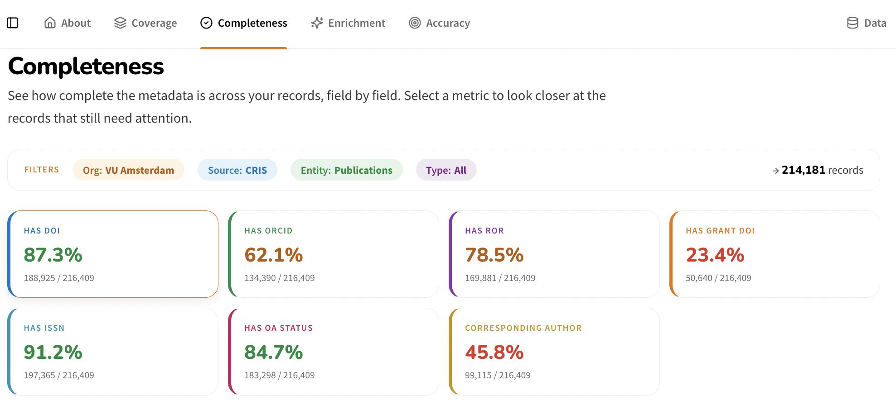
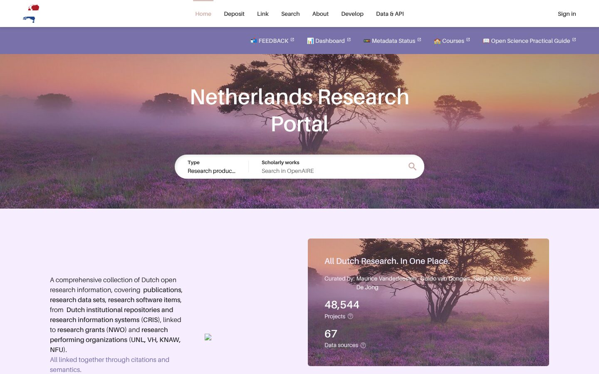

Barcelona Declaration Conference · Berlin · 24–25 November 2026
From PID
to Portal
How the Netherlands made its open research information measurable, improvable and visible: in twelve months, together with the Dutch Barcelona Declaration signatories.

Missing ORCIDs. Incomplete affiliations. Conflicting open access metadata.
These gaps weaken reporting, evaluation and discovery of research. But where exactly in the research information chain do they occur, and what can we do about them together?
Ambition: high quality Dutch open research information covering the whole research lifecycle, for independent and responsible research reporting and analytics.
PID2Portal (Sept 2025 – Aug 2026) is led by SURF and funded by Universities of the Netherlands (€190k). It bridges to the Open Science NL infrastructures DURF and BROCCOLI.
Monitor open research information
For research intelligence teams at Barcelona signatories

ORI data quality dashboard. Compare your CRIS with OpenAlex and OpenAIRE on four dimensions, and get suggested interventions with effort and impact.
- Framework report: 14 use cases from 10 organisations. Fix three elements first: DOIs, ROR and ORCID.
- Metrics report: what to measure in OpenAlex, OpenAIRE, Crossref and CRIS, and how.
- ORI DuckLake: 2 TB of open research information as Parquet on SURF storage, queryable by anyone, also in plain language with open AI agents.
Strengthen the Netherlands Research Portal
For heads of research support, repository and CRIS owners

netherlands.openaire.eu. All Dutch publications, datasets and software from repositories and CRIS systems, linked to grants and organisations. Built on OpenAIRE.
- A curated, open list of Dutch research organisations with their identifiers.
- A live status of repositories and CRIS systems, and a metadata compatibility monitor built on the DuckLake.
- People are now an entity in the OpenAIRE Graph and API: the basis for an expert finder.
Next: DURF carries portal governance forward; BROCCOLI takes over the ORI dashboard and DuckLake.
What we learned, for every Barcelona signatory
- Start from use casesAsk what your institution needs open metadata for. That tells you which fields to fix first.
- Compare sources openlyGaps only become visible when you put your CRIS next to the open indexes, record by record.
- Open stacks workA data lake of Parquet files on public storage is cheap, sovereign and reusable by others.
- Govern togetherDashboards are the easy part. Lasting change needs shared governance, funding and standards.